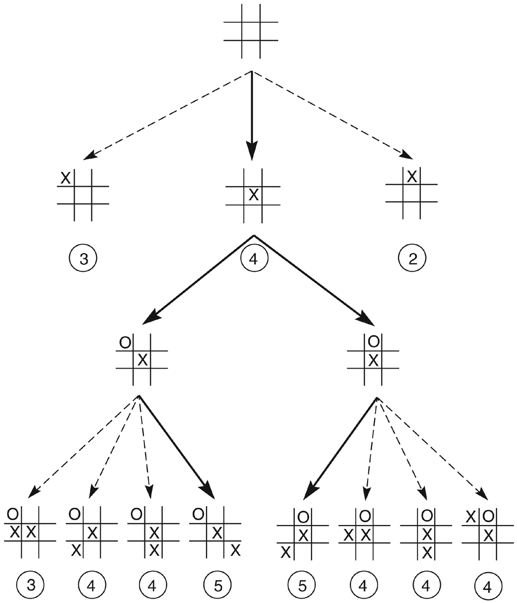
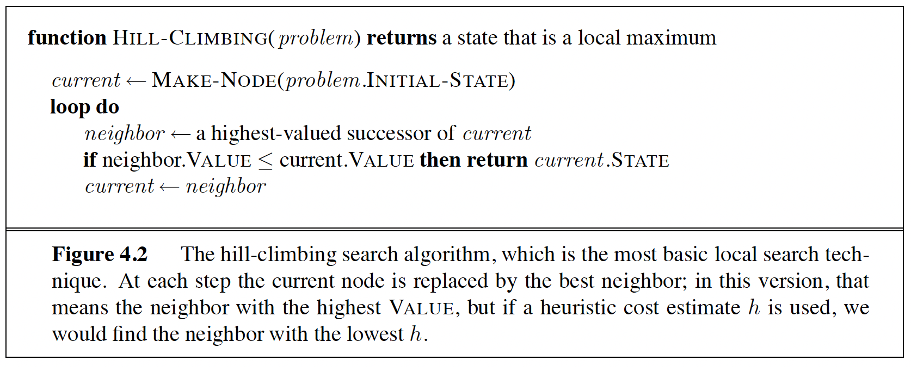
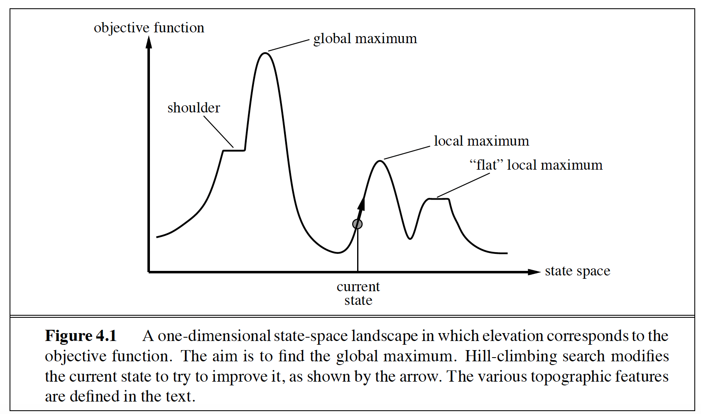
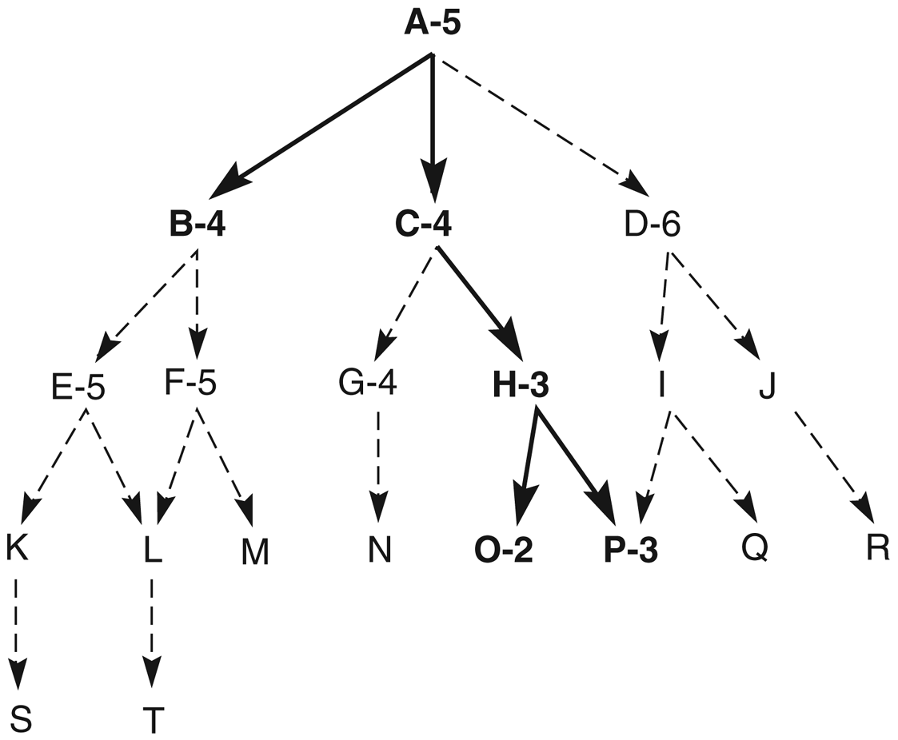
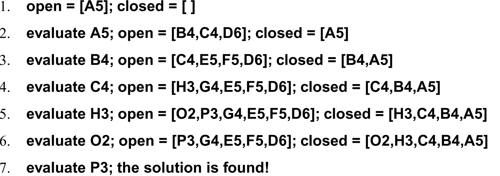
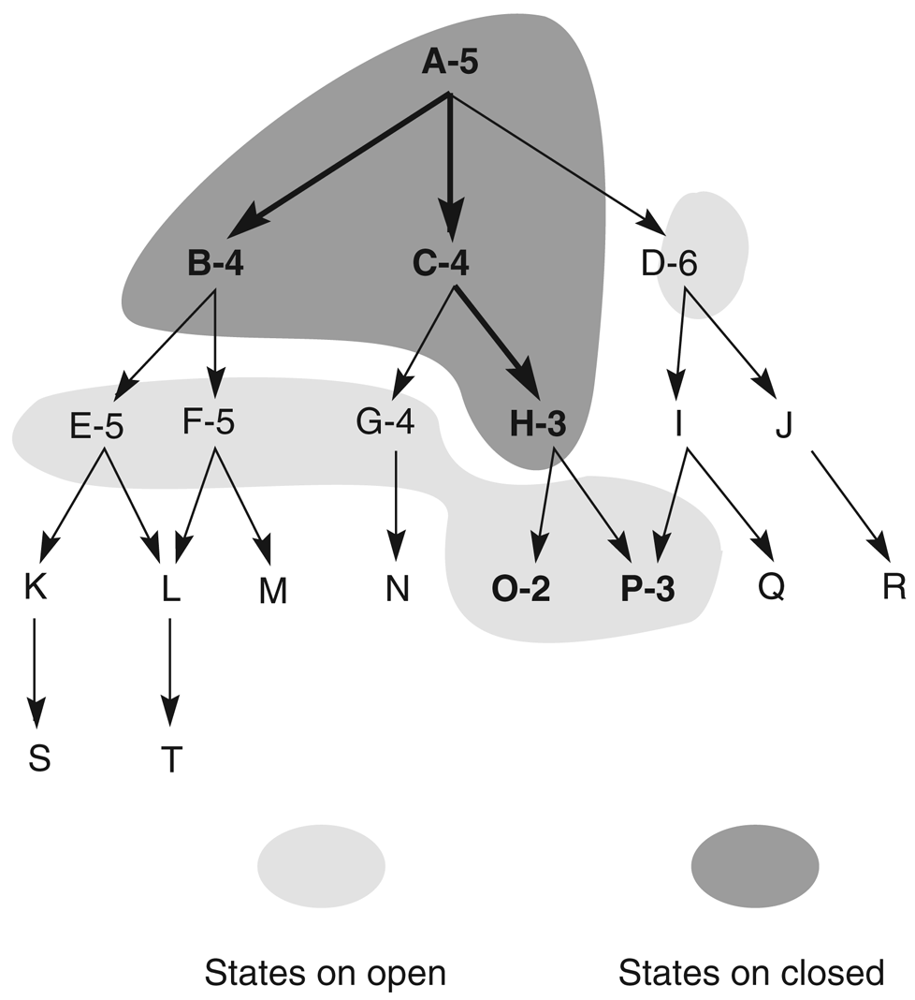
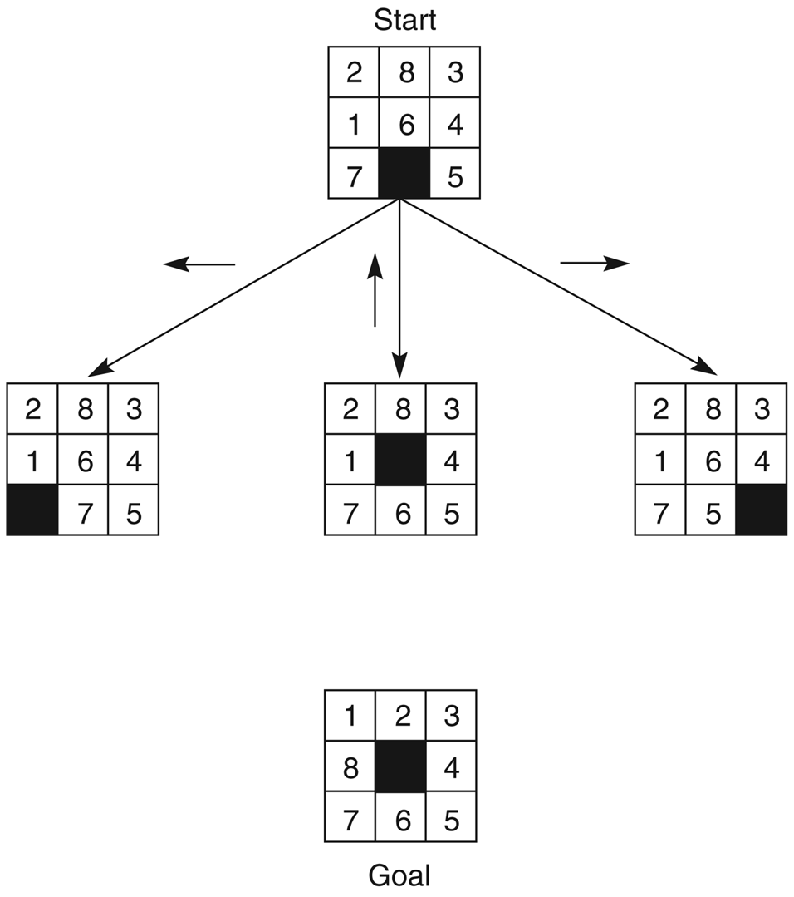
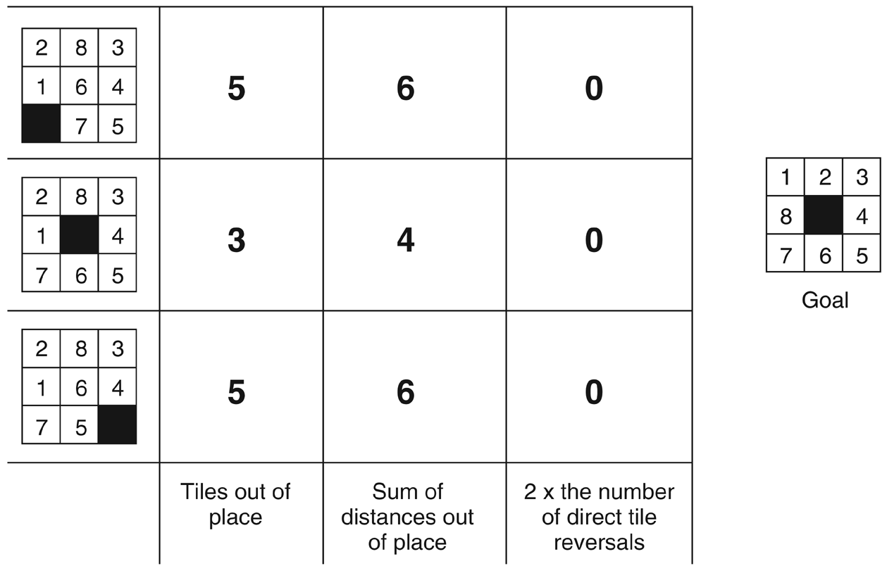

Heuristics, greedy best-first search, and A* — the most famous search algorithm in AI.
Module 6 · Based on Russell & Norvig, AIMA Sections 3.5–3.6
Intermediate Heuristic Search ~50 minPrerequisites: Module 4 (Problem Solving & State Spaces) and Module 5 (Uninformed Search). You should be comfortable with state spaces, frontiers, and breadth-first / uniform-cost search before starting.

Uninformed search treats every unexplored state as equally promising — and pays for that ignorance with exponential work. Informed search adds one crucial ingredient: knowledge about which direction looks good.
Heuristics are rules for choosing the branches in a state space that are most likely to lead to an acceptable solution. They are based on experience, intuition, or domain knowledge — the word comes from the Greek heuriskein, "to discover" (the same root as eureka!).
AI problem solvers reach for heuristics in two classic situations:
| Situation | Why exact methods fail | Example |
|---|---|---|
| 1. No exact solution exists | The problem statement itself is ambiguous — the available data admits several interpretations. | Medical diagnosis: a set of symptoms may have many possible causes; doctors use heuristics to pick the most plausible diagnosis and tests. |
| 2. An exact solution exists but is computationally infeasible | The state space is so large that exhaustive search would never finish. | Chess: the full game tree exists in principle, but with roughly 10120 paths no machine can enumerate it. Every strong chess program is built on heuristics. |
Consider the first move in tic-tac-toe. Brute force says there are 9 opening moves, 9×8 replies, and so on — but by symmetry there are really only three distinct first moves: a corner, a side, or the center. Now apply a simple heuristic: move to the square through which the most winning lines pass.
The center sits on 4 winning lines, each corner on 3, each side square on only 2. Applied at every turn, this "most wins" heuristic collapses the symmetric 9-move opening space to 3 options, immediately picks one, and prunes so aggressively that almost no search remains. That is exactly what a good heuristic buys you: drastically less search for a small cost in evaluation.
A heuristic is an informed guess, not a guarantee. It uses limited information to estimate promise, so it can be wrong — it may lead the search down a suboptimal branch or even away from the goal entirely. The art of heuristic search is designing algorithms that exploit good guesses while recovering gracefully when the guess is bad. Keep that theme in mind: it is the thread that runs from hill climbing all the way to A*.


The simplest way to use a heuristic is hill climbing: expand the current state, evaluate its children with the heuristic, and move to the best child. Repeat. Crucially, hill climbing keeps no history — no OPEN list, no record of siblings passed over — so it can never back up and recover from a bad choice.
A local maximum is a state that looks better than all of its children — yet is not the goal. Hill climbing arrives there, sees no improving move, and simply halts. In the 8-puzzle it is common to reach a configuration where every single move temporarily worsens the heuristic (e.g. a tile must move out of its goal position to let another tile pass). To reach the goal you must go downhill first — and hill climbing, by design, refuses.
Two relatives of the same disease: on a plateau all children evaluate the same, so there is no gradient to follow; on a ridge the summit is reachable only by a sequence of individually unimpressive moves that the one-step lookahead never sees.
Hill climbing is greedy local search: cheap on memory, fast, and easily trapped. The cure is simple — keep the states you didn't choose. If the current path sours, fall back to the best alternative seen so far. Add that history and hill climbing becomes best-first search, our next algorithm.


open is re-ordered so the lowest-heuristic node is expanded next, until the solution is found. (From the course slides.)
Best-first search maintains two lists. OPEN is a priority queue of generated-but-unexpanded states, ordered by heuristic merit with the best state leftmost. CLOSED records states already expanded, so we never repeat work or loop. Because every unexpanded state stays on OPEN, the algorithm can abandon a path that turns bad and jump to the most promising state anywhere in the space — it recovers from dead ends, which hill climbing cannot.
Here is a small hypothetical state space in the style of Luger's Figure 4.4. Each state is labeled with its heuristic value h (lower = closer to the goal, so lower is better). State O is a dead end — a trap the heuristic makes look attractive.
We run best-first search from A, always expanding the state on OPEN with the lowest h, breaking ties leftmost. Watch how the algorithm chases the false lead O, hits the dead end, and calmly falls back to P:
| Iteration | X (expanded) | Children | OPEN after | CLOSED after |
|---|---|---|---|---|
| 1 | A(5) | B(4), C(4), D(6) | [B4, C4, D6] | [A5] |
| 2 | B(4) (tie with C, leftmost wins) | E(5), F(5) | [C4, E5, F5, D6] | [B4, A5] |
| 3 | C(4) | G(4), H(3) | [H3, G4, E5, F5, D6] | [C4, B4, A5] |
| 4 | H(3) | O(2), P(3) | [O2, P3, G4, E5, F5, D6] | [H3, C4, B4, A5] |
| 5 | O(2) | none — dead end! | [P3, G4, E5, F5, D6] | [O2, H3, C4, B4, A5] |
| 6 | P(3) | GOAL(0) | [GOAL0, G4, E5, F5, D6] | [P3, O2, H3, C4, B4, A5] |
| 7 | GOAL(0) | — goal test succeeds → SUCCESS | — | — |
Solution path (recovered by following parent links back from the goal): A → C → H → P → GOAL.
The heuristic lied: O(2) looked like the best state on the entire frontier, but it was a dead end. Hill climbing would have died right there. Best-first search shrugs — P(3) was still sitting on OPEN, so the search resumes from the next-best alternative as if nothing happened. Memory converts a fallible heuristic into a robust algorithm.
So far our "merit" was just the heuristic h. But a state can look close to the goal while sitting at the end of an absurdly expensive path. A properly informed evaluation should account for both the road already traveled and the road believed to remain:
| Term | Meaning | Nature |
|---|---|---|
g(n) | The actual cost of the path from the start to n. | Known exactly — we walked it. |
h(n) | The estimated cost of the cheapest path from n to a goal. | A heuristic guess. |
f(n) | The estimated total cost of the cheapest solution passing through n. | Part fact, part forecast. |
The two extremes of this formula are algorithms you already know (or are about to meet):
Use both terms and you get A* — the best of both worlds, as we'll prove shortly.


The 8-puzzle is the classic heuristic laboratory: simple enough to trace by hand, rich enough that heuristic quality genuinely matters. Consider this start state and goal:
Three candidate heuristics from the classic slides, each cheaper or richer than the last:
Count the tiles not in their goal position (the blank doesn't count). Checking tile by tile: 2 is at top-left but belongs top-middle (misplaced); 8 is at top-middle but belongs middle-left (misplaced); 3 is correct; 1 is at middle-left but belongs top-left (misplaced); 6 is at the center but belongs bottom-middle (misplaced); 4, 7, 5 are all correct. Four misplaced tiles → h₁ = 4.
For each tile, count the grid moves (horizontal + vertical) from its current square to its goal square, then sum. Misplaced tiles only: tile 2 needs 1 move, tile 8 needs 2 (one down, one left), tile 1 needs 1, tile 6 needs 1. Total → h₂ = 1 + 2 + 1 + 1 = 5.
A direct reversal is a pair of adjacent tiles that must swap places (each sits in the other's goal square) — expensive to fix, so weight it by 2. In our start state no two adjacent tiles are exact swaps of each other, so h₃ = 0: the heuristic can't even tell this state from the goal!
| Heuristic | Working (start state above) | Value |
|---|---|---|
| h₁ misplaced tiles | tiles 1, 2, 6, 8 out of place | 4 |
| h₂ Manhattan distance | 2→1, 8→2, 1→1, 6→1 moves | 5 |
| h₃ 2 × tile reversals | no adjacent pair needs a direct swap | 0 |
Now fold in g(n) = depth of the state in the search. The start's three successors (slide a tile into the blank) each have g = 1:
Moving tile 6 into place drops h₁ from 4 to 3, so its f stays at 4 while the alternatives jump to 6 — the search correctly prefers real progress and correctly penalizes moves that displace already-correct tiles (7 or 5).
A good heuristic must be cheap to compute (it's evaluated at every generated node) and informative (it should discriminate sharply between good and bad states). These pull in opposite directions: h₃ is trivially cheap but blind (it scored our scrambled state 0); a perfect heuristic h* would solve the problem outright but costs as much as the search itself. h₂ hits the sweet spot — nearly free, yet it sees more structure than h₁. Choosing that sweet spot is heuristic design.
Greedy best-first search is best-first search with f(n) = h(n): always expand the node that appears closest to the goal, ignoring how much it cost to get there. Our running example for the rest of the module is AIMA's Romania route-finding problem: drive from Arad to Bucharest, minimizing road distance. The heuristic is the straight-line distance to Bucharest, hSLD — a bird can't beat a straight line, so it's a natural estimate.
| hSLD: straight-line distance to Bucharest (km) | |||||||
|---|---|---|---|---|---|---|---|
| Arad | 366 | Fagaras | 176 | Mehadia | 241 | Sibiu | 253 |
| Bucharest | 0 | Giurgiu | 77 | Neamt | 234 | Timisoara | 329 |
| Craiova | 160 | Hirsova | 151 | Oradea | 380 | Urziceni | 80 |
| Drobeta | 242 | Iasi | 226 | Pitesti | 100 | Vaslui | 199 |
| Eforie | 161 | Lugoj | 244 | Rimnicu Vilcea | 193 | Zerind | 374 |
The roads we'll need (actual driving distances): Arad–Sibiu 140, Arad–Timisoara 118, Arad–Zerind 75, Sibiu–Fagaras 99, Sibiu–Rimnicu Vilcea 80, Sibiu–Oradea 151, Fagaras–Bucharest 211, Rimnicu Vilcea–Pitesti 97, Pitesti–Bucharest 101.
| Step | Expanded | Frontier (h values) | Greedy choice |
|---|---|---|---|
| 1 | Arad (366) | Sibiu 253, Timisoara 329, Zerind 374 | Sibiu — lowest h |
| 2 | Sibiu (253) | Fagaras 176, Rimnicu Vilcea 193, Timisoara 329, Zerind 374, Oradea 380 | Fagaras — looks closest |
| 3 | Fagaras (176) | Bucharest 0, Rimnicu Vilcea 193, … | Bucharest — goal! |
Greedy finds Arad → Sibiu → Fagaras → Bucharest = 140 + 99 + 211 = 450 km after expanding only three nodes. Impressively fast — and wrong. The optimal route is Arad → Sibiu → Rimnicu Vilcea → Pitesti → Bucharest = 140 + 80 + 97 + 101 = 418 km. Greedy never considered Rimnicu Vilcea (h = 193) because Fagaras (h = 176) looked closer, even though the Fagaras road is much longer.
| Property | Greedy best-first |
|---|---|
| Optimal? | No — ignores g(n), so a short-looking detour wins over a genuinely short road. |
| Complete? | No (tree version) — it can oscillate forever. Classic case: from Iasi toward Fagaras, hSLD says go to Neamt first (a dead end), then back to Iasi, then Neamt again… unless repeated states are checked. |
| Time / Space | O(bm) worst case (m = maximum depth), though a good heuristic often does far better in practice. |
A* (pronounced "A-star", Hart, Nilsson & Raphael, 1968) is best-first search using the full evaluation function f(n) = g(n) + h(n): expand the node with the lowest estimated total solution cost. It is the most widely known algorithm in all of AI — the engine behind GPS routing, videogame pathfinding, puzzle solvers and planners — because with one mild condition on h (next section) it is complete, optimal, and optimally efficient.
Two details matter enormously. First, the goal test happens when a node is selected for expansion, not when it is generated — otherwise A* could return the first (possibly bad) route it stumbles on. Second, if a shorter path is rediscovered to a node already on OPEN, we keep the cheaper one. Both details are exactly what saves us in the trace below.
Same map, same heuristic as before — but now every frontier entry carries f = g + h. Follow the lowest f at each step (all arithmetic shown):
| Step | Expanded (lowest f) | Frontier after expansion, with f = g + h |
|---|---|---|
| 1 | Arad f = 0 + 366 = 366 | Sibiu 140+253=393 · Timisoara 118+329=447 · Zerind 75+374=449 |
| 2 | Sibiu (393) | Rimnicu Vilcea 220+193=413 · Fagaras 239+176=415 · Timisoara 447 · Zerind 449 · Arad 280+366=646 · Oradea 291+380=671 |
| 3 | Rimnicu Vilcea (413) | Fagaras 415 · Pitesti 317+100=417 · Timisoara 447 · Zerind 449 · Craiova 366+160=526 · Arad 646 · Oradea 671 |
| 4 | Fagaras (415) | Pitesti 417 · Timisoara 447 · Zerind 449 · Bucharest 450+0=450 · Craiova 526 · Arad 646 · Oradea 671 |
| 5 | Pitesti (417) | Bucharest 418+0=418 (shorter path found — replaces the 450 entry) · Timisoara 447 · Zerind 449 · Craiova 526 · Arad 646 · Oradea 671 |
| 6 | Bucharest (418) | Goal test succeeds → SUCCESS. Path: Arad → Sibiu → Rimnicu Vilcea → Pitesti → Bucharest, cost 418 km — the optimum. |
Arithmetic check: g(Sibiu)=140; g(Rimnicu)=140+80=220; g(Fagaras)=140+99=239; g(Pitesti)=220+97=317; Bucharest via Fagaras g=239+211=450; Bucharest via Pitesti g=317+101=418. All f values above follow by adding hSLD.
At step 4, A* has Bucharest in hand — the same 450 km route greedy proudly returned. But A* refuses to stop, because Pitesti's f = 417 is a promise of something better than 450, and an admissible f never over-promises. One more expansion cashes in that promise: Bucharest at 418. Only when Bucharest itself has the lowest f on the frontier — meaning no remaining node could possibly beat it — does A* declare victory. That patience is precisely why A* is optimal where greedy is merely fast.
Let h*(n) be the true cost of the cheapest path from n to a goal. A heuristic is admissible if for every node n:
Admissible heuristics never overestimate — they are systematically optimistic. hSLD is admissible because no road can be shorter than the straight line. Both 8-puzzle heuristics qualify too: every misplaced tile needs at least one move (h₁), and each tile needs at least its Manhattan distance in moves since one move shifts one tile one square (h₂).
Tree-search A* with an admissible heuristic is optimal.
Proof sketch. Let C* be the optimal solution cost, and suppose a suboptimal goal G₂ appears on the frontier. Since G₂ is a goal, h(G₂) = 0, so f(G₂) = g(G₂) > C*. Meanwhile some node n on the optimal path is always on the frontier, and by admissibility f(n) = g(n) + h(n) ≤ C*. Therefore f(n) ≤ C* < f(G₂), so A* always expands n before G₂ — it can never select a suboptimal goal. This is exactly what happened in the Romania trace: Pitesti (f = 417 ≤ 418 = C*) was expanded before Bucharest-via-Fagaras (f = 450). ∎
A heuristic is consistent if for every node n and every successor n′ reached by action a:
This is a triangle inequality: the estimate from n can't exceed the cost of one step plus the estimate from where that step lands. Key facts:
A*'s Achilles heel isn't time — it's space. It keeps every generated node on OPEN or CLOSED, and on hard problems it runs out of memory long before it runs out of patience. Memory-bounded variants exist — IDA* (iterative-deepening A*) and RBFS (recursive best-first search) achieve A*-like behavior in linear space — see AIMA §3.5.5 for the details. For now, remember: if A* fits in memory, it's usually the algorithm to beat.
Given two admissible heuristics, which should you use? If h₂(n) ≥ h₁(n) for every node n, we say h₂ dominates h₁. Domination translates directly into efficiency: A* expands every node with f(n) < C*, i.e. every node with h(n) < C* − g(n) — and a larger h disqualifies more nodes. So A* with h₂ never expands more nodes than A* with h₁ (up to tie-breaking). For the 8-puzzle, Manhattan distance dominates misplaced tiles, since each misplaced tile contributes at least 1 to both counts.
How much does dominance matter in practice? Here are AIMA's classic experimental averages for randomly generated 8-puzzle instances (nodes generated to find a solution at depth d):
| Solution depth d | IDS (uninformed) | A*(h₁ misplaced) | A*(h₂ Manhattan) |
|---|---|---|---|
| d = 12 | 3,644,035 nodes | 227 nodes | 73 nodes |
| d = 24 | ~54,000,000,000 nodes (infeasible) | 39,135 nodes | 1,641 nodes |
| Effective branching factor b* (d = 12) | 2.78 | 1.42 | 1.24 |
The effective branching factor b* is the branching factor a uniform tree of depth d would need to contain the nodes actually generated — a heuristic's quality distilled into one number (1.0 would be perfect). Squeezing b* from 2.78 down to 1.24 turns a 3.6-million-node search into a 73-node stroll.
Better heuristics mean exponentially less work. The cost of search grows like (b*)d, so even a modest improvement in the heuristic compounds at every level of depth. Rule of thumb: among admissible heuristics, always prefer the dominant one — and if you have several with no dominator, take h(n) = max(h₁(n), …, hₖ(n)), which is admissible and dominates them all.
Three problems, increasing in subtlety. Do each one on paper before opening the solution — tracing A* by hand once is worth ten readings.
Run A* from S to G on the graph below. Edge labels are step costs; h values are given per node. Break f-ties by expanding the node generated earliest. Give the order of node expansions and the final path with its cost.
| Step | Expanded | Frontier after, with f = g + h |
|---|---|---|
| 1 | S (f = 0+8 = 8) | B 3+4=7 · A 2+6=8 |
| 2 | B (7) | A 8 · D 6+4=10 (via B, g=3+3=6) |
| 3 | A (8) | C 5+3=8 · D 10 (path via A also gives g=2+4=6 — same cost, keep one) |
| 4 | C (8) | G 9+0=9 · D 10 |
| 5 | G (9) | Goal! (D, f = 10, is never expanded.) |
Expansion order: S, B, A, C, G. Final path: S → A → C → G, cost 2 + 3 + 4 = 9. Note the little drama: B looked best at first (f = 7), but its continuation through D (f = 10) could never beat the S–A–C corridor — A* explored the tempting branch, then abandoned it, exactly as designed. (Check: the alternative route S–B–D–G costs 3+3+4 = 10 > 9, so 9 is indeed optimal.)
For the 8-puzzle state below (same goal as in the lesson: 1 2 3 / 8 _ 4 / 7 6 5), compute h₁ (misplaced tiles) and h₂ (Manhattan distance). Which is closer to the true solution distance?
h₁ = 3: tiles 2, 8 and 1 are misplaced (3, 4, 5, 6, 7 are all home).
h₂ = 4: tile 2 needs 1 move (right), tile 8 needs 2 (down + left), tile 1 needs 1 (up); 1 + 2 + 1 = 4.
The true distance is exactly 4 moves: slide 8 down (blank up), 2 left (blank …) — concretely: blank up → blank left → blank down → blank right gives 2 8 3/1 _ 4 → 2 _ 3/1 8 4 → _ 2 3/1 8 4 → 1 2 3/_ 8 4 → 1 2 3/8 _ 4 = goal.
So h₂ is closer — here it is exact (h₂ = h* = 4), while h₁ underestimates by 1. This is dominance made visible: h₂ ≥ h₁ everywhere, and the bigger admissible estimate steers A* more sharply.
(a) Is h(n) = 0 for all n admissible? What algorithm does A* become with it? (b) Is h(n) = 3 × Manhattan distance admissible for the 8-puzzle? What do you risk by using it?
(a) Yes — 0 ≤ h*(n) always, so h = 0 is (trivially) admissible; it's the ultimate optimist that knows nothing. With it, f(n) = g(n), and A* degrades into uniform-cost search: still optimal, but completely uninformed — the "g-only" extreme from the f = g + h section.
(b) No. Manhattan distance is sometimes exact (h₂ = h*, as in exercise 2), so tripling it gives 3h* > h* — an overestimate, hence inadmissible. A* with it may still find a solution, and often faster (inflated heuristics search greedily), but the optimality guarantee is lost: it can commit to a path whose true cost exceeds the optimum, because its inflated f values wrongly disqualify nodes on the optimal path. This trade — speed for a bounded loss of optimality — is exploited deliberately in "weighted A*", but it must be a choice, never an accident.
You've reached the end of the single-agent search unit, the classical core of AI problem solving: from state spaces (Module 4), through blind search (Module 5), to A*, the algorithm the rest of the field builds on. Next: Module 7 — Adversarial Search & Games, where a hostile opponent enters the picture and we meet minimax and alpha-beta pruning. Further ahead in the syllabus: knowledge representation and logic (agents that reason, not just search).